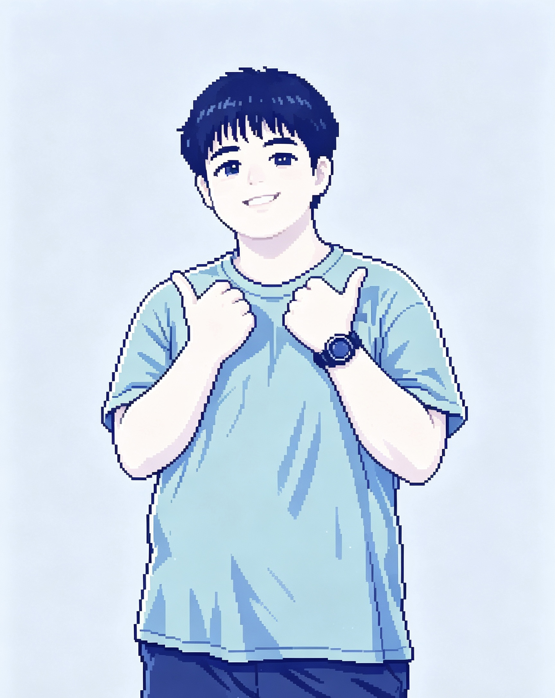
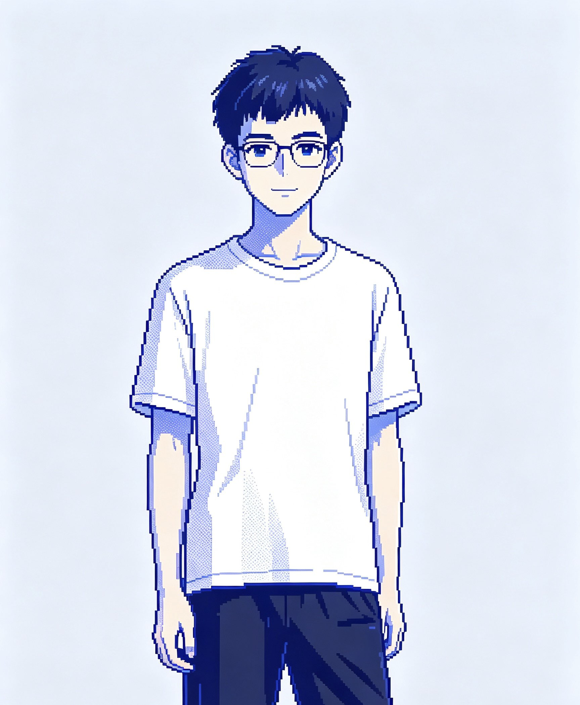

郭如诚
没有队组 · 小组成员
ABOUT US · 没有队组
我们是 2 班的“没有队组”，一共有六位成员。网站设有科幻、动画、悬疑和剧情四个栏目，每栏选择四部电影，提供剧情简介、观看建议和重点场景介绍。
OUR TEAM
六位成员共同完成内容整理、页面设计与检查。

没有队组 · 小组成员

没有队组 · 小组成员

没有队组 · 小组成员
没有队组 · 小组成员

没有队组 · 小组成员
没有队组 · 小组成员
这是《网页设计与制作》课程第三章综合实例的补充作业。网站使用 HTML5、CSS3 和原生 JavaScript 制作，可在本地直接打开。
片页上的分数是本站主观推荐指数，不是豆瓣或其他平台的评分。主题语由本站撰写，不作为电影原台词引用。影片名称及相关素材的权利属于原权利人，本站仅作课程学习与电影介绍使用。